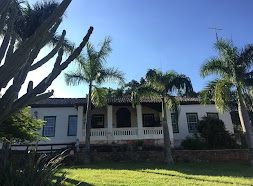

Fazenda Cana Verde Pousada & Polo School
 Imagem meramente ilustrativa. Substitua pela imagem real do local.A Fazenda Cana Verde é um refúgio rural que combina o charme de uma fazenda histórica com a conveniência de uma pousada. É um local perfeito para desconectar da rotina, com quartos rústicos e confortáveis em antigas construções da fazenda.
Além das atividades de lazer, como piscina, banheira de hidromassagem e lago para caiaque, o grande destaque é a Polo School, oferecendo aulas e treinos de polo. O café da manhã com produtos frescos da fazenda e a culinária caseira são muito elogiados pelos hóspedes.
Avaliação dos Hóspedes
Nota 8.0 (em sites de reserva)
Comodidades
- Polo School e equitação
- Piscina externa e lago
- Banheira de hidromassagem e sauna
- Café da manhã com produtos da fazenda
- Restaurante e bar
- Aceita animais de estimação
Contato e Localização
- Endereço: Bairro do Pedregulho Caixa Postal 127, Itu - SP
- Telefone: (19) 4023-1260
Voltar